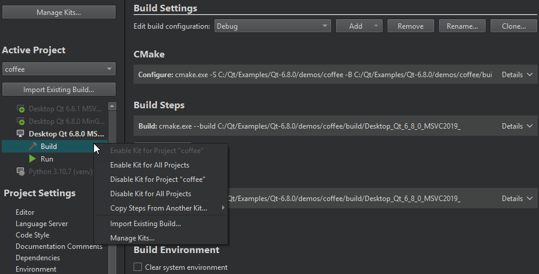
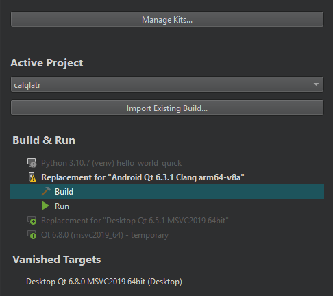

Activate kits for a project
The Build & Run section of the Projects mode sidebar lists the kits that are compatible with your project. To activate one or more kits, click them.

The list displays kits from Preferences > Kits. Warning and error icons indicate that the kit configuration is not suitable for the project type. To view the warning and error messages, move the mouse pointer over the kit name.
Manage kits
To modify kit configuration or to add kits to the list or to remove them from it, select Manage Kits.
Each kit consists of a set of values that define one environment, such as a device, compiler, debugger, and Qt version, as well as steps for building, deploying, and running applications.
To copy the build, deploy, and run steps from another kit, select Copy Steps from Another Kit in the context menu.
To deactivate a kit, select Disable Kit for Project in the context menu.
Note: Deactivating a kit removes all custom build and run settings for the kit.
To import an existing build for the project, select Import Existing Build.
Copy custom settings from vanished targets
Qt Creator creates a list of Vanished Targets to save project-specific settings, such as custom build flags or run configuration arguments, that would disappear if Qt Online Installer removes the corresponding kits when you update your Qt installation.

Go to one of the following options in the context menu to restore the project's settings:
- Create a New Kit creates a new kit with the same name for the same device type, with the original build, deploy, and run steps. Other kit settings are not restored.
- Copy Steps to Another Kit copies the build, deploy, and run steps to another kit.
To remove vanished targets, go to Remove Vanished Target or Remove All Vanished Targets in the context menu.
Note: Since version 13.0, Qt Creator does not create replacement kits, but you might still see them listed for existing projects. You can copy the build, deploy, and run steps from them to other kits.
See also Add kits, Configuring Projects, and Kits.